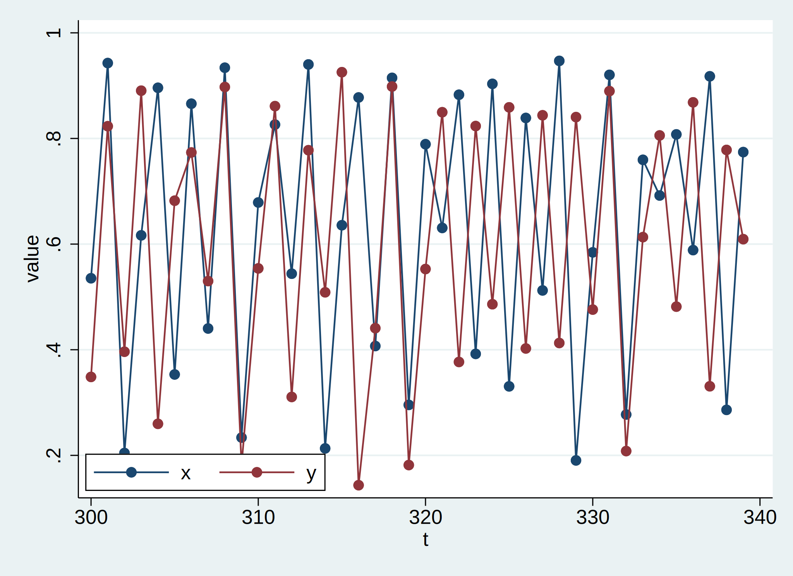

Logistic map
Setting up the synthetic data
First, we tell Stata that we're working with time series using tsset.
. set obs 500
Number of observations (_N) was 0, now 500.
.
. gen t = _n
. tsset t
Time variable: t, 1 to 500
Delta: 1 unit
This is important, as the edm relies on the user to specify which variable corresponds to 'time'.
Next, we can generate the synthetic data which we will use in the causal analysis.
. gen x = 0.2 if _n==1
(499 missing values generated)
. gen y = 0.3 if _n==1
(499 missing values generated)
. gen z = 0.1 if _n==1
(499 missing values generated)
.
. local r_x 3.79
. local r_y 3.79
. local r_z 3.77
. local beta_xy = 0.0
. local beta_yx=0.2
. local beta_zy = 0.5
. local tau = 1
. drawnorm u1 u2
.
. forvalues i=2/`=_N' {
2. qui replace x=l.x *(`r_x' *(1-l.x)-`beta_xy'*l.y) in `i'
3. qui replace y=l.y *(`r_y' *(1-l.y)-`beta_yx'*l`tau'.x) in `i'
4. qui replace z=l.z *(`r_z' *(1-l.z)-`beta_zy'*l`tau'.y) in `i'
5. }
. keep in 300/450
(349 observations deleted)
Now we have two time series, \(x\) and \(y\). For example, the first ten joint observations look like:
. list x y if _n <= 10
+---------------------+
| x y |
|---------------------|
1. | .5353563 .3485506 |
2. | .9427623 .8232493 |
3. | .2045144 .3962567 |
4. | .6165885 .8905014 |
5. | .895983 .2597431 |
|---------------------|
6. | .3532184 .6821833 |
7. | .8658451 .773515 |
8. | .4402364 .5300195 |
9. | .9339633 .8974178 |
10. | .2337515 .181273 |
+---------------------+
Plotting the two time series together looks like:

Find the optimal embedding dimension
Now we use edm explore to find the optimal embedding dimension of the \(y\) time series.
We check the values of \(E = 2, \dots 10\), and use rep(50) to take 50 random subsets of the data to use for training (leaving the other random half for prediction).
. edm explore y, e(2/10) rep(50)
Replication progress (50 in total)
Percent complete: 0...10...20...30...40...50...60...70...80...90...
Empirical Dynamic Modelling
Univariate mapping with y and its lag values
----------------------------------------------------------------------
--------- rho --------- --------- MAE ---------
Actual E theta Mean Std. Dev. Mean Std. Dev.
----------------------------------------------------------------------
2 1 .98104 .0056417 .03127 .0044271
3 1 .96996 .012497 .0393 .0054778
4 1 .95131 .016597 .049013 .0060371
5 1 .92509 .02697 .059667 .0082334
6 1 .89149 .039457 .07092 .0097508
7 1 .83573 .04969 .085179 .010616
8 1 .78633 .058107 .098735 .011921
9 1 .74695 .066014 .10839 .012128
10 1 .71795 .071137 .11598 .011756
----------------------------------------------------------------------
Note: Results from 50 runs
Note: Number of neighbours (k) is set to between 3 and 11
Note: Random 50/50 split for training and validation data
. mat r= e(explore_result)
. svmat r, names(col)
number of observations will be reset to 450
Press any key to continue, or Break to abort
Number of observations (_N) was 151, now 450.
. twoway (scatter c3 c1)(lpoly c3 c1),xtitle("E") ytitle("{it:{&rho}}") ///
> legend(order(1 "{it:{&rho}}" 2 "local polynomial smoothing") ///
> col(1) position(8) ring(0))
. drop c*
From the rho column we can see the prediction accuracy decreasing as \(E\) increases, so \(E=2\) is our best choice for the embedding dimension.
Plotting the same results:
. mat r= e(explore_result)
. svmat r, names(col)
. twoway (scatter c3 c1)(lpoly c3 c1),xtitle("E") ytitle("{it:{&rho}}") ///
> legend(order(1 "{it:{&rho}}" 2 "local polynomial smoothing") ///
> col(1) position(8) ring(0))
. drop c*
Assess the level of non-linearity in the time series
Another use of edm explore is to check if the observed time series exhibits high levels of non-linearity.
Here, we use the S-map algorithm and vary \(\theta = 0, \dots, 5\), using all of the training set as neighbours (i.e. k(-1)).
. edm explore y, e(2) algorithm(smap) theta(0(1)5) k(-1)
Percent complete: 0...10...20...30...40...50...60...70...80...90...
Empirical Dynamic Modelling
Univariate mapping with y and its lag values
--------------------------------------------------------------------
Actual E theta rho MAE
--------------------------------------------------------------------
2 0 .7276 .12482
2 1 .9594 .057205
2 2 .98107 .035173
2 3 .98825 .027744
2 4 .99162 .023781
2 5 .993 .021781
--------------------------------------------------------------------
Note: Number of neighbours (k) is set to 75
Note: 50/50 split for training and validation data
Showing the same rho/\(\rho\) prediction accuracies as a plot:
. mat r = e(explore_result)
. svmat r, names(col)
number of observations will be reset to 501
Press any key to continue, or Break to abort
Number of observations (_N) was 450, now 501.
. twoway (line c3 c2) , legend(order(1 "{it:{&rho}}") position(5) ring(0)) ///
> xtitle("{it:{&theta}}") ytitle("{it:{&rho}}") ///
> title("{it:{&rho}}-{it:{&theta}} of variable y")
. drop c*
As the accuracy climbs as larger for \(\theta > 0\) compared to \(\theta = 0\), we deduce that the time series is likely the output of a non-linear system. This is important, as the theory underlying EDM is specific to non-linear systems.
Convergent cross-mapping
Finally, now we are satisfied that the time series are non-linear and we have selected \(E=2\) as the embedding dimension, we can run convergent cross-mappping. If the prediction accuracy increases as the library size \(L\) increases, then we can say this is evidence of a causal link in that direction.
Using these predictions, we can plot the accuracy against the library size:
. mat c1 = e(xmap_1)
. mat c2 = e(xmap_2)
. svmat c1, names(xy)
number of observations will be reset to 1460
Press any key to continue, or Break to abort
Number of observations (_N) was 501, now 1,460.
. svmat c2, names(yx)
. label variable xy3 "y|M(x)"
. label variable yx3 "x|M(y)"
. twoway (scatter xy3 xy2, mfcolor(%30) mlcolor(%30)) ///
> (scatter yx3 yx2, mfcolor(%30) mlcolor(%30)) ///
> (lpoly xy3 xy2)(lpoly yx3 yx2), xtitle(L) ytitle("{it:{&rho}}") ///
> legend(col(2))
As both plots of the accuracy are significantly increasing as \(L\) increases, then we can say there is evidence of both \(x \to y\) and \(y \to x\) causal links. The direction which increases the most is the \(x \mid M(y)\) direction. This notation means we used \(y\) to predict \(x\), and due to the backward nature of EDM means it refers to the causal link \(x \to y\). Therefore, we'd conclude those both directions show causality, though the \(x \to y\) link is stronger in the data.